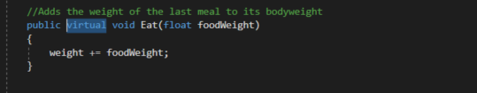
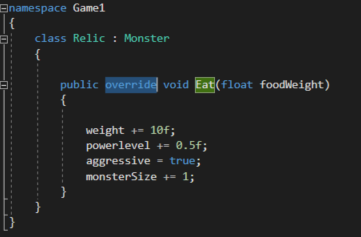
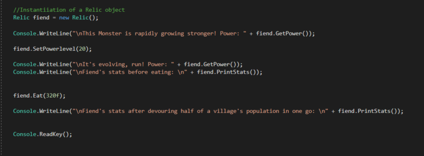
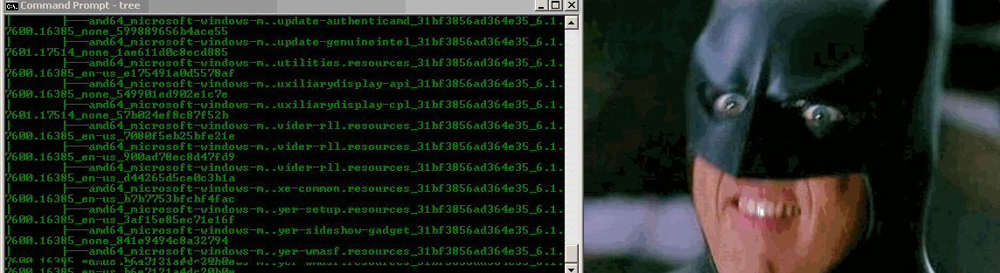
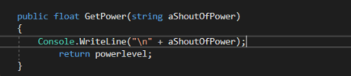
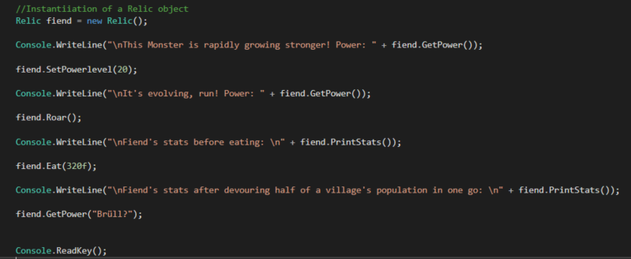
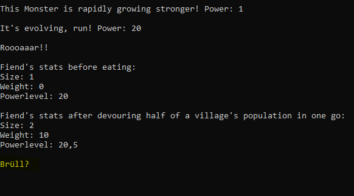

01 Polymorphie in der Vererbung
Polymophismus bedeutet Vielgestaltigkeit. compile time Polymorphie haben wir bereits unter dem Namen Method Overload kennengelernt. Im folgenden Beispiel gehen wir näher auf die run time Polymorphie ein.
Wir arbeiten weiter an unserem Monster Beispiel und wenden Polymorphie direkt an, indem wir eine Methode der parent Klasse überschreiben (override). Als nächstes verändern wir eine Methode der parent Klasse. Um dies zu tun muss vor die Methode, in die Reihe der Schlüsselwörter das wort virtual geschrieben werden. virtual signalisiert, dass die Methode überschrieben werden kann. Wählen wir hierzu die Methode Eat(float foodWeight);


Nun sollte das Gewicht des fiend um 10 erhöht werden, egal wie viel Gewicht die Mahzeit hatte. Das powerlevel um 0.5 und die größe um 1, außerdem wird das Monster, selbst nach dem Essen auf jeden Fall aggressiv bleiben. Es steht nurnoch aus unsere Annahme in der Main Methode zu testen.

Wir haben erfolgreich einen Fiend erzeugt, der von der Klasse Monster abgeleitet wurde!

02 Member verbergen, überschreiben und in abgeleiteter Klassen überladen
Durch die Nutzung des Schlüsselworts new können Member der parent Class “versteckt” werden, was bedeutet man kann die gleichen Namen für Member verwenden, ohne diese überschreiben zu müssen (via virtual und orverride, was die Implementierung verändern würde). Bsp.:
public class Parent{
public void OneMethod(){
}
}
public class Child : Parent{
public new void OneMethod(){
}
}

Normalerweise würde das Programm einen Fehler werfen, da man versucht eine Methode, die nicht als virtual gekennzeichnet ist zu überschreiben. Durch das Schlüsselwort new jedoch wird die gleichnamige Methode der Parent Klasse versteckt (und nicht überschrieben).
Ein Method Overload in einer abgeleiteten Klasse funktioniert genau gleich wie gehabt. Im folgenden Beispiel überladen wir die Methode GetPower, die eigentlich nur zum zurückliefern von powerLevel verwendet wird.
  
03 Abstrakte Klassen und Methoden
Zitat
Der abstract-Modifizierer gibt an, dass dem modifizierten Objekt eine Implementierung fehlt oder dass diese unvollständig ist. Der abstract-Modifizierer kann für Klassen, Methoden, Eigenschaften, Indexer und Ereignisse verwendet werden. Verwenden Sie den abstract-Modifizierer in einer Klassendeklaration, um anzugeben, dass die Klasse nur die Basisklasse für andere Klassen sein und nicht selbst instanziiert werden soll. Als abstrakt markierte Member müssen von Klassen, die von nicht abstrakten Klassen abgeleitet wurden, implementiert werden.
Ein Beispiel:
public abstract class Human{
public abstract void Walk();
}
public class Noble : Human{
public override void Walk(){
//Walk like a Noble, not like a Peasant
}
}
Wie bereits aufgefallen ist, hat die abstrakte Methode keinen Methodenkörper und sieht Syntaktic anders aus, als eine gewöhnliche Methode. Abstrakte Methoden können nur in Abstrakten Klassen deklariert werden und abstrakte Klassen können nicht instanziiert werden. Da die Klasse Noble von Human erbt, muss sie die Methode Walk() implementieren. Zusammengefasst sind abstrakte Klassen und Methoden Platzhalter.
04 Typprüfung und -konvertierung
Durch Typtest- und Umwandlungsoperatoren können einfach Typprüfungen und Typkonvertierungen durchgeführt werden.
| Name | Beispiel | Rückgabe |
|---|---|---|
| is-Operator | A is B | boolean |
| typeof-Operator | typeof(A) | System.Type-Instanz |
| as-Operator | A as B | Konvertiert Typ A zu Typ B, wenn unmöglich dann null |
| cast-Operator () | (A)B | Wandelt B zu A, kann Exception werfen |
Quellen und weiterführende Links
01 https://docs.microsoft.com/en-us/dotnet/csharp/tutorials/inheritance
https://www.dotnetperls.com/base
02 https://www.geeksforgeeks.org/method-hiding-in-c-sharp/
https://stackoverflow.com/questions/392721/difference-between-shadowing-and-overriding-in-c/392778#392778
https://www.geeksforgeeks.org/method-hiding-in-c-sharp/
03 https://docs.microsoft.com/de-de/dotnet/csharp/language-reference/keywords/abstract
04 https://docs.microsoft.com/de-de/dotnet/csharp/language-reference/operators/type-testing-and-cast